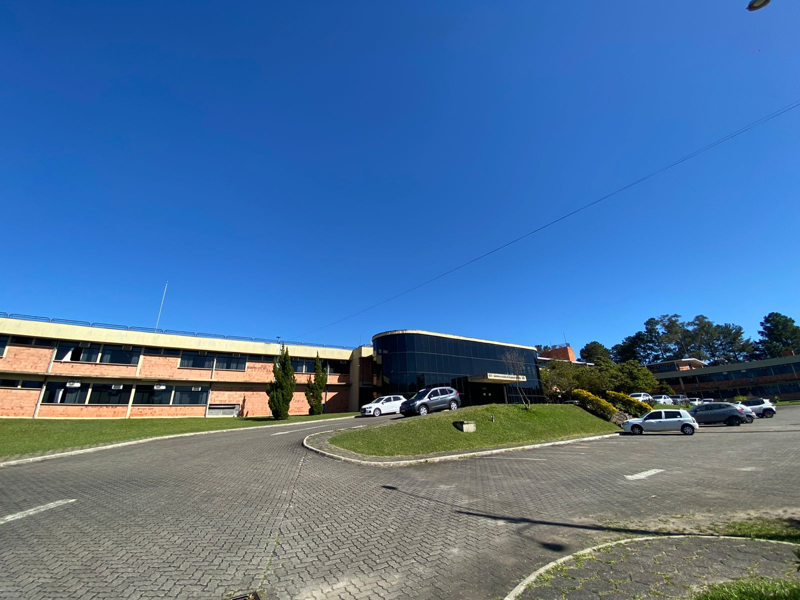
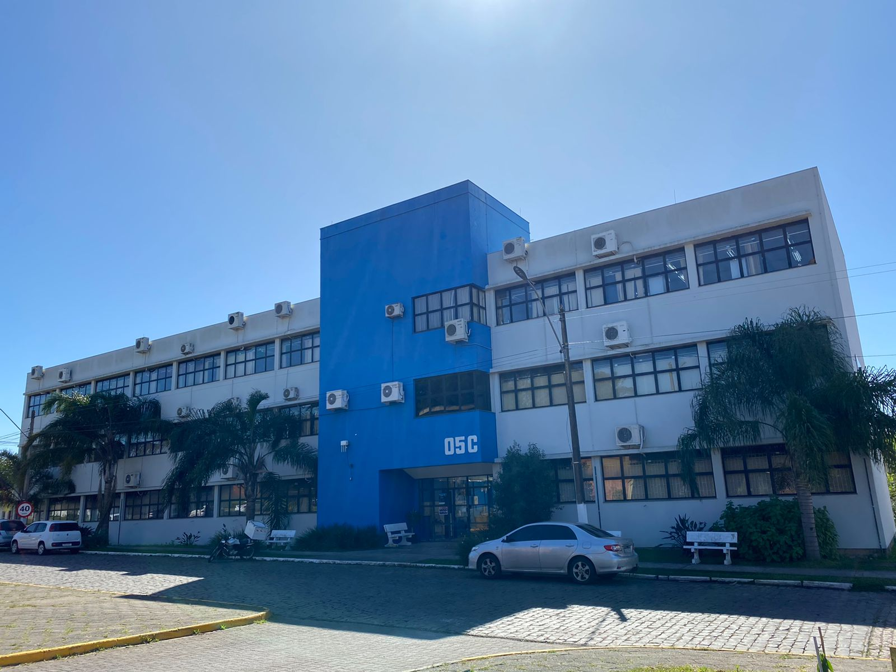

O SBSeg 2022 será realizado nas dependências do INPE, que possui uma infraestrutura moderna para a realização das principais atividades do evento, incluindo o credenciamento, o Capture the Flag, almoço, coffee-breaks e coquetel de abertura.
Os minicursos e tutoriais, por sua vez, serão realizados nos laboratórios do prédio 05C do CTISM, localizado imediatamente à frente do INPE.
